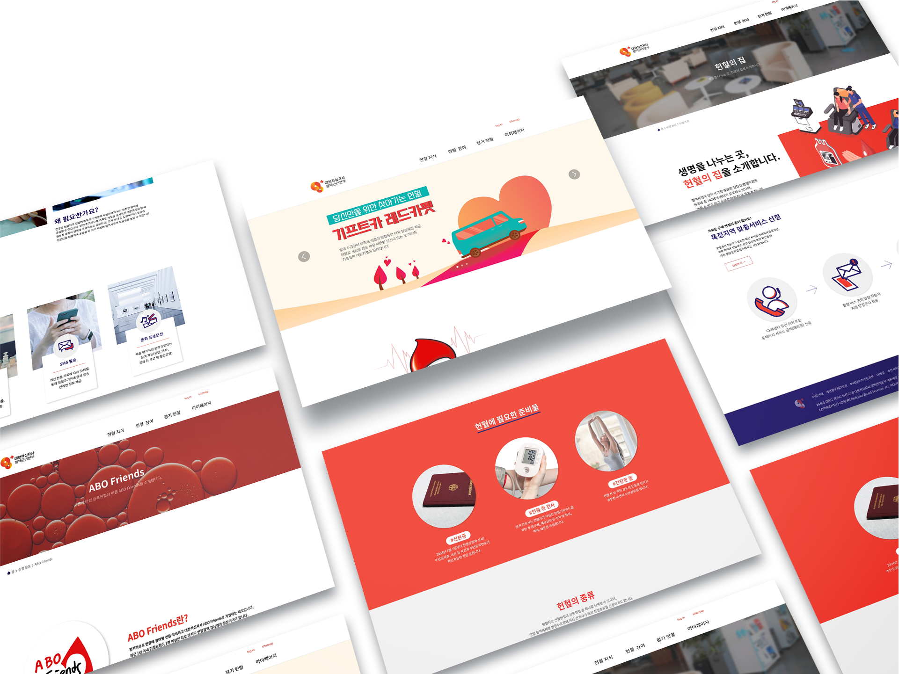
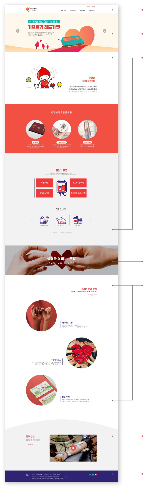

- HEADER
- 로고와 GNB, 유틸로 구성
GNB를 통해 2차 메뉴로 이동 가능
- MAIN BANNER
- 이벤트와 공지사항을 한눈에 볼 수 있도록
슬라이드 형식으로 배치
- CONTENTS : About
- 헌혈의 필요성과 준비물에 대한 내용을
사진과 함께 알기 쉽도록 요약하여 배치
헌혈의 종류와 사은품은 아이콘을 중심으로
마우스오버나 슬라이드 넘기기를 통해
더 많은 정보를 얻을 수 구성
- FULL BANNER
- 슬로건을 풀배너와 함께 강조
- CONTENTS : Activity
- 다양한 헌혈 활동에 관련된 메뉴로
이동가능한 링크 버튼과 함께
정기 헌혈 관련 내용을 사진과 함께 배치
- PROMO MOVIE
- 대표 홍보 영상과 함께 더 다양한 영상을
볼 수 있는 영상 채널 바로가기 버튼을 배치
- FOOTER
- 로고 / 주소 / 저작권 / sns로 구성